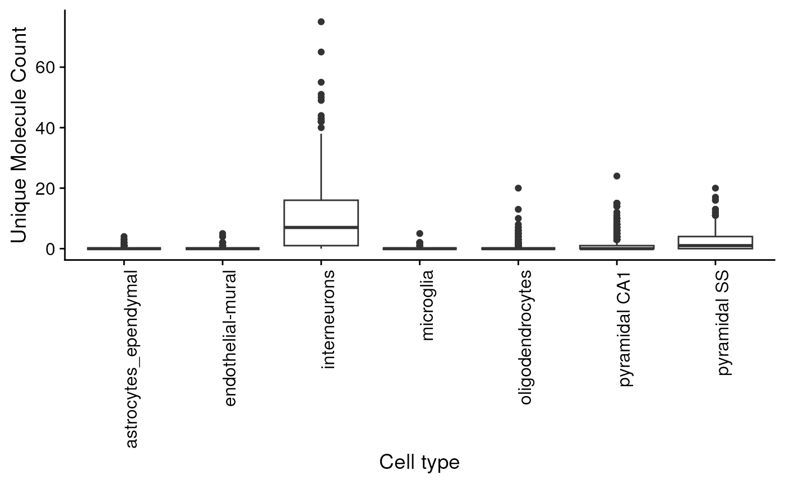

vignettes/ewceData.Rmd
ewceData.RmdIf you use the EWCE package, please cite
If you use the cortex/hippocampus single cell data associated with this package then please cite the following papers:
The EWCE package is designed to facilitate expression weighted celltype enrichment analysis as described in our Frontiers in Neuroscience paper1.
The package was originally designed to work with the single cell cortical transcriptome data from the Linnarsson lab2 which is available at http://linnarssonlab.org/cortex/. Using this package it is possible to read in any single cell transcriptome data, provided that you have a cell by gene expression matrix (with each cell as a seperate column) and a seperate annotation dataframe, with a row for each cell.
The EWCE process involves testing for whether the genes in a target list have higher levels of expression in a given cell type than can reasonably be expected by chance. The probability distribution for this is estimated by randomly generating gene lists of equal length from a set of background genes.
The EWCE method can be applied to any gene list. In the paper we reported it’s application to genetic and transcriptomic datasets, and in this vignette we detail how this can be done.
The data in the ewceData package are used throughout
EWCE’s associated vignette to give insight into its functionality. These
datasets are:
cortex_mrna - Karolinska Cortex/Hippocamus dataset
hypothalamus_mrna - Karolinska Hypothalamus dataset
celltype_data/ctd - Subset of the genes from Karolinska cortex/hippocampus and hypothalamus single cell transcriptome datasets.
example_genelist - A list of genes genetically associated with Alzheimer’s disease.
mouse_to_human_homologs - Table of Human–>Mouse orthologs for all human genes, containing the MGI and HGNC symbols, Human and Mouse Entrez and Ensembl gene IDs for all human orthologs for mouse genes. Whenin the mouse genes are defined based on a list of all MGI markers from the MGI website.
Example tables of differential expression. A list of genes found to be differentially expressed in:
tt_alzh_BA36 - the BA36 in Alzheimer’s disease.
tt_alzh_BA44 - the BA44 in Alzheimer’s disease.
tt_alzh - the BA46 in Alzheimer’s disease.
All the data can be loaded by using the dataset name:
ensembl_transcript_lengths_GCcontent <- ensembl_transcript_lengths_GCcontent()
mouse_to_human_homologs <- mouse_to_human_homologs()
all_mgi_wtEnsembl <- all_mgi_wtEnsembl()
all_mgi <- all_mgi()
all_hgnc_wtEnsembl <- all_hgnc_wtEnsembl()
all_hgnc <- all_hgnc()
example_genelist <- example_genelist()
tt_alz <- tt_alzh()
tt_alzh_BA36 <- tt_alzh_BA36()
tt_alzh_BA44 <- tt_alzh_BA44()
ctd <- ctd()
schiz_genes <- schiz_genes()
hpsd_genes <- hpsd_genes()
rbfox_genes <- rbfox_genes()
id_genes <- id_genes()
cortex_mrna <- cortex_mrna()
hypothalamus_mrna <- hypothalamus_mrna()
alzh_gwas_top100 <- alzh_gwas_top100()
mgi_synonym_data <- mgi_synonym_data()This package also contains a single cell transcriptome (SCT) data from “Cell types in the mouse cortex and hippocampus revealed by single-cell RNA-seq”, Science, 2015 with the expression and annotation data, formatted as a CTD object.
Important note: The code (available in inst/scripts/make-data.R) to derive this data can be used on other downloaded paper’s data. Note you do NOT have to format your input single cell data like the Linnarsson data. Just read it into R such that you have an expression matrix and an annotation data frame. The three columns that you must have in the annotation data frame are “cell_id”, “level1class” and “level2class”.
To check the data, we can quickly plot the distribution of expression of a given gene across all the cell types:
cortex_mrna_dt <- cortex_mrna()
gene="Necab1"
cellExpDist = data.frame(e=cortex_mrna_dt$exp[gene,],
l1=cortex_mrna_dt$annot[
colnames(cortex_mrna_dt$exp),]$level1class)
ggplot(cellExpDist) + geom_boxplot(aes(x=l1,y=e)) + xlab("Cell type") +
ylab("Unique Molecule Count") +
theme(axis.text.x = element_text(angle = 90, hjust = 1)) 